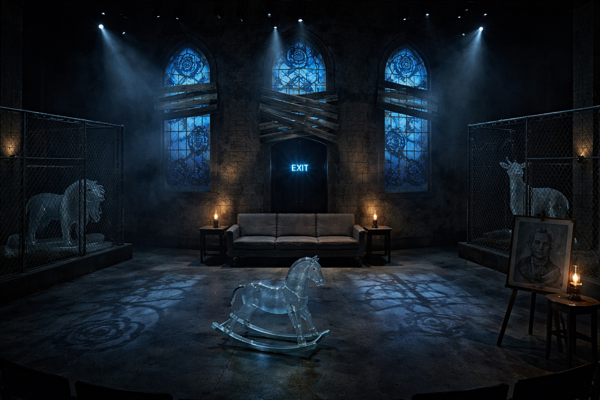
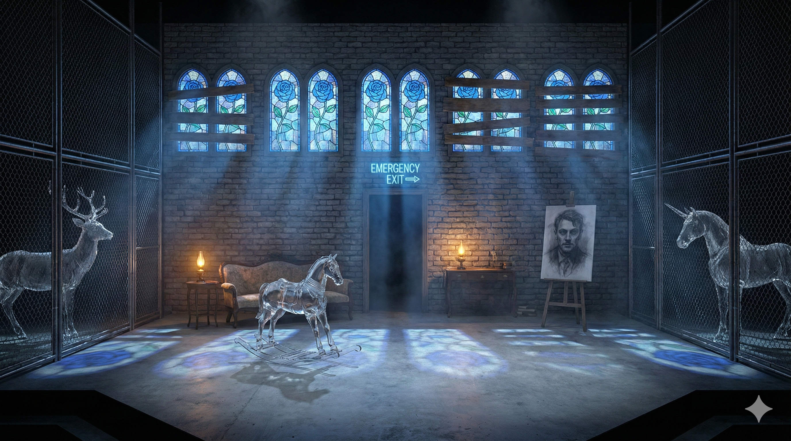
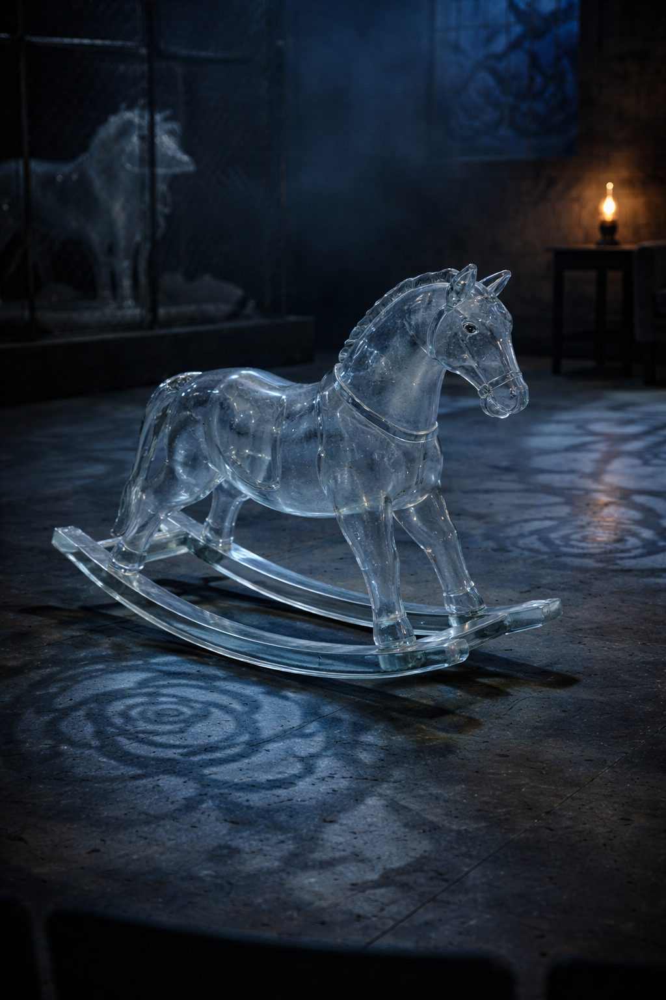
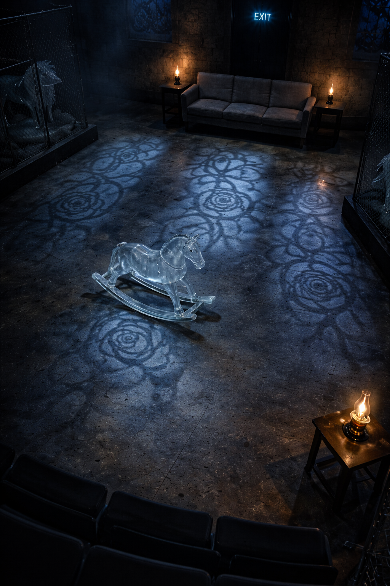
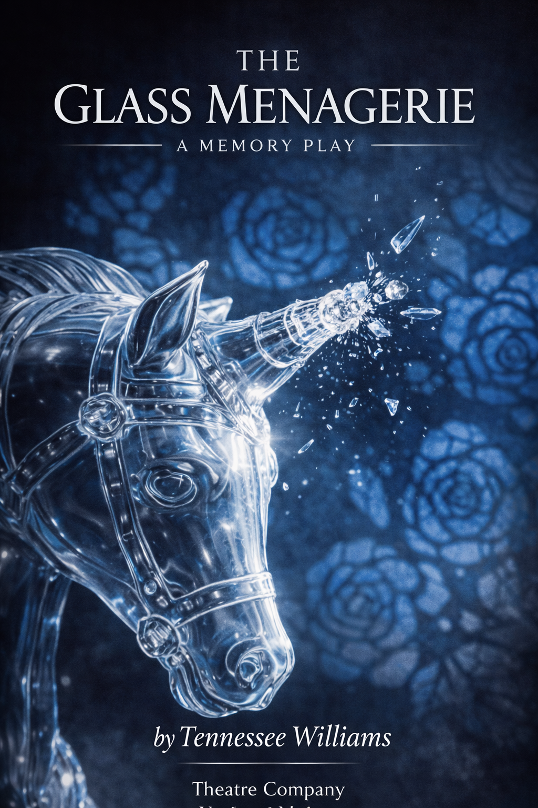

The Glass Menagerie
Tennessee Williams, 1944
A Memory Play in Seven Scenes
A ruined church transformed into a memory-space where sacred architecture, institutional confinement, and domestic fragments collapse into a single image. Grey cobblestone walls rise to arched stained glass windows depicting blue roses"”the impossible flowers that became Laura's nickname. Light streams through, casting blue rose shadows across a concrete floor.
Wire mesh fencing lines the wings, containing life-size glass animals that watch the action below. At centre stage, a transparent glass rocking horse"”childhood frozen in fragile material, too precious to touch, too beautiful to survive.

Design Concept
This design inverts the domestic realism Williams' text suggests to create something far more psychologically true. The Wingfield apartment dissolves into a memory-space where sacred architecture, institutional confinement, and domestic fragments collapse into a single image. The family does not keep the glass animals"”they are enclosed by them.
The Space
A row of arched stained glass windows depicting blue roses, set into grey cobblestone masonry suggesting a deconsecrated church or abandoned institutional building. Several panels are boarded over with rough wooden planks"”beautiful things partially obscured, light partially blocked.
The boarding is haphazard, desperate, as if someone tried to keep something out. Or in. The ruined church aesthetic makes this a sacred space that has been abandoned. Memory as desecrated cathedral.
The Wire Enclosures
Industrial wire mesh fencing rises to enclosure height"”the kind you'd see at a zoo or detention facility. Behind this fencing, visible but unreachable, stand life-size glass animals. Translucent sculptural presences catching light, watching.
They are not being protected. They are doing the watching. The family moves freely in the central space; the animals observe from their cages. But who is truly imprisoned?
Lighting Concept
Blue light streaming through stained glass windows, casting blue rose shadow patterns across the grey concrete floor. These shadows should feel devotional"”light through cathedral windows falling on stone.
Oil lamps provide warm amber pools where scenes play out. These islands of warmth exist within the cold blue void. Characters move between warmth and cold, between presence and memory.
The Exit
Where Williams calls for a fire escape"”Tom's liminal space between entrapment and freedom"”this design substitutes a blue neon "EMERGENCY EXIT" sign with an arrow pointing toward the rear wall, toward the stained glass, toward the past.
The sign is banal, institutional. But rendered in blue neon, it ties chromatically to the rose windows. And the arrow points not outward but inward, deeper into memory. The way out leads back.
Atmospheric Notes
Cold, sacred, ruined. The space breathes abandonment and impossible beauty. The blue rose shadows should feel simultaneously romantic and funereal"”the kind of light that falls in empty churches, in dreams of places you can never return to.
The audience should feel the grey should feel endless, exhausting, inescapable"”and then the blue light shocks. Not hope exactly, but something devotional. Evidence of worship that has already failed.

The Glass Unicorn (Reimagined)
Just off-centre stage sits a life-size glass rocking horse. This replaces Williams' tiny unicorn figurine"”the "freakishly" different piece Laura loves most"”with something simultaneously childlike and impossible.
A glass rocking horse is a contradiction made material: childhood toys are meant to be used, ridden, battered by small hands. Glass shatters. This object freezes nostalgia, beautiful paralysis rendered in crystalline form.
It represents everything the Wingfields worship: a childhood that cannot be touched, a past that breaks if you try to return to it. Placed just off-centre, it occupies the space almost-but-not-quite at the focal point. The eye keeps returning to it but can never rest there comfortably.
When Jim breaks the unicorn's horn in the text, he breaks this"”the impossible beautiful thing at the centre of Laura's world. In this design, the metaphor becomes monumental. The breaking of something this size would be catastrophic, irreversible, echoing through the ruined church like the collapse of everything fragile.
The scale says: your waiting is not unique. Your fragility is not special. This is what worship costs. This is what memory weighs. The glass horse stands as monument to everything that breaks when you try to hold onto it.
Design Gallery
Stage renders, scenic elements, and lighting studies for a memory that exists only in conversation and image generation.







Dramaturgical Notes
Memory as Architecture
Williams specified that the play should feel like memory"”"seated predominantly in the heart""”with gauze scrims, projected images, and lighting that isolates moments like photographs fading at the edges. Not realism. Impression. The past seen through glass, darkly.
"I give you truth in the pleasant disguise of illusion."
"” Tom Wingfield, Opening MonologueThis design removes the pleasant disguise. The illusion remains. The truth is colder. The Wingfields don't live in an apartment"”they exist in the architecture of memory itself, a ruined church where worship has already failed.
The Zoo Cages
The wire mesh enclosures invert the relationship between keeper and kept. Laura's glass animals have grown monumental and now contain the family. What was once her private escape has become everyone's prison. The delicate things she collected now collect her.
The Guilt of Escape
Tom's exit sign points backward, into the stained glass, into memory. Even leaving, he goes deeper in. The play's final image"”Laura blowing out candles, plunging the stage into darkness"”finds its scenic equivalent in the extinguishing of amber warmth, leaving only blue light and the watching glass.
"I didn't go to the moon, I went much further"”for time is the longest distance between two places."
"” Tom Wingfield, Closing MonologueWilliams in 1944
Williams wrote The Glass Menagerie while working in a St. Louis shoe factory, the same job his father forced on his sister Rose. Rose, like Laura, was painfully shy and fragile. In 1943, she was lobotomized. Williams never forgave himself for not preventing it. Every production of this play is, in some sense, an act of expiation"”the brother who got away, trying to reach back through glass and time.
Blue Roses Don't Exist
That's the point. Laura is something that shouldn't exist"”too delicate for the world, too beautiful for survival. The stained glass windows show impossible flowers because the play is about impossible things: impossible love, impossible escape, impossible forgiveness.
Technical Specifications
Materials and staging notes for the production team.
Stage Configuration
- Thrust or proscenium with strong frontal composition
- Grey cobblestone masonry walls (flats or sculpted foam)
- Arched window openings for stained glass panels
- Concrete floor treatment or painted surface
Stained Glass Windows
- Translucent acrylic or theatrical gel panels
- Blue rose motif design
- Backlit from flies or cyc
- Some panels boarded with practical timber
Wire Enclosures
- Industrial wire mesh panels (powder-coated grey)
- Freestanding frames stage left and right
- Contained glass animal sculptures
- Subtle internal lighting
Glass Rocking Horse
- Life-size (approx. 1.5m height)
- Clear acrylic or resin construction
- Internal LED lighting option
- Positioned just off-centre stage
- Breakaway version for finale (optional)
Lighting
- Blue wash through stained glass (gobo breakup)
- Practical oil lamps (amber LED)
- Blue neon EXIT sign (practical)
- Glass animals subtly underlit throughout
- Final blackout leaving only blue wash
Set Dressing
- Minimal furniture: Victorian couch, side tables
- Charcoal portrait on easel (the father)
- Period-appropriate domestic details
- Everything slightly shabby, salvaged quality
Production Posters
Marketing materials for a production that exists only in memory. The challenge: capture the play's central paradox"”the beauty of fragile things, the cruelty of holding onto them too tightly.
Laura's nickname comes from a misheard word: "pleurosis" becomes "Blue Roses." The condition becomes identity. The impossible flower"”blue roses don't exist in nature"”becomes the visual signature. Beautiful, impossible, wrong.
Clean, theatrical, allowing the imagery to breathe. The title carries weight; let the blue light and glass do the work of promising fragility. The audience should feel they're looking at something precious before they even enter the space.
Williams wrote that the play is "memory and is therefore seated predominantly in the heart." The posters suggest not a documentary record but a dream"”the way Tom Wingfield sees his past when he closes his eyes in strange cities, trying to forget.